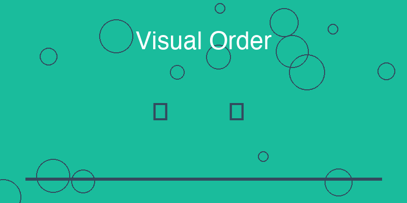

18 Visual Order: Professional Quality Comes from Consistent Rules

When people describe an interface as “professional,” “clean,” or “high quality,” they are often responding to something subtle rather than something obvious.
The interface may not contain complex graphics or sophisticated visual effects. In many cases, the design appears almost simple.
Yet the overall impression feels organized, calm, and intentional.
This effect is rarely the result of artistic talent alone. It usually comes from consistent visual rules.
Practice projects often design each element independently. Buttons, text, margins, and colors may all work individually, but they lack a shared structure. As a result, the interface feels uneven or improvised.
Professional interfaces, by contrast, are governed by a small set of design systems that regulate how elements relate to one another.
Three of the most important systems are spacing, typography, and grayscale structure.
18.0.1 Spacing Scale
Spacing determines how elements are positioned relative to one another.
In practice projects, spacing is often applied inconsistently. A margin might be set to 13 pixels in one place, 22 pixels in another, and 17 pixels somewhere else. These values may appear reasonable individually, but the lack of consistency produces subtle visual noise.
Professional interfaces usually rely on a spacing scale.
Instead of choosing arbitrary values, designers define a small set of spacing units and use them throughout the interface. For example, a base unit might determine the spacing between elements, and larger distances are derived from multiples of that unit.
This approach creates rhythm within the layout. Elements align naturally, and the interface feels orderly even when the user cannot consciously identify the pattern.
Spacing scales are one of the simplest ways to produce visual consistency.
18.0.2 Typography Hierarchy
Text plays a central role in most interfaces. Users read titles, labels, instructions, and content throughout their interaction with the system.
In practice projects, typography is often handled informally. Font sizes may vary unpredictably, headings may not follow a clear structure, and visual emphasis may appear inconsistent.
Professional interfaces define a typographic hierarchy.
A small set of text styles establishes the roles that text can play within the interface. Titles may use one size and weight, section headings another, body text another, and auxiliary information yet another.
Because these styles repeat consistently, users quickly learn to interpret the structure of the interface.
Important information stands out clearly. Secondary information remains visible without competing for attention.
This hierarchy transforms text from isolated fragments into an organized system of communication.
18.0.3 The Grayscale System
Color is another area where practice projects often struggle.
Developers may select colors freely without establishing relationships between them. Backgrounds, borders, and text may each use unrelated tones, producing a cluttered appearance.
Professional interfaces frequently rely on a grayscale system.
Instead of using many unrelated colors, designers define a sequence of neutral tones ranging from dark to light. These tones are used to differentiate elements such as primary text, secondary text, borders, backgrounds, and disabled states.
This structure creates a clear visual order. Information appears layered rather than chaotic.
Accent colors can then be used sparingly to highlight important actions or interactive elements.
Because the underlying grayscale system already provides structure, the interface maintains clarity even when color is minimal.
18.0.4 Alignment
Alignment determines how elements line up with one another across the interface.
In practice projects, elements often drift slightly out of alignment. Buttons may not share the same horizontal position, text blocks may start at different points, and images may not align with surrounding content.
These small inconsistencies accumulate and create a sense of disorder.
Professional interfaces enforce strict alignment rules. Elements share common vertical and horizontal axes, creating visual relationships across the layout.
Alignment gives the interface an underlying grid that organizes the entire design.
Even when users do not consciously notice the grid, they experience the result as clarity and balance.
18.0.5 The Power of White Space
White space—also called negative space—is the empty area between elements.
Practice projects often attempt to use every available pixel. Information becomes crowded together, and the interface begins to feel dense or chaotic.
Professional systems treat white space as a structural tool.
By allowing space around elements, the interface creates visual breathing room. Sections become easier to distinguish, and the user’s attention moves naturally through the layout.
White space is not wasted space. It is an active component of the design that clarifies relationships between elements.
When used correctly, it gives the interface a sense of calm and refinement.
18.0.6 Low-Cost Improvements with High Impact
One of the most surprising aspects of visual design is how small changes can dramatically alter the perception of quality.
Developers often assume that achieving a polished appearance requires complex graphics or extensive design resources.
In reality, the greatest improvements often come from simple structural rules:
consistent spacing
clear typographic hierarchy
a disciplined grayscale palette
precise alignment
generous white space
These elements require little technical complexity, yet they produce a powerful visual effect.
By applying consistent visual rules, an interface gains coherence. The design appears intentional rather than accidental.
And that sense of intentional order is one of the strongest signals of professionalism in software design.
18.1 实践指南：设计系统快速启动
专业的视觉设计不是靠艺术天赋，而是靠系统化的规则。以下是一个快速启动设计系统的框架。
18.1.1 设计系统基础要素
1. 间距系统（Spacing Scale）
/* 4px 基础单位 */
--space-1: 4px;
--space-2: 8px;
--space-3: 16px;
--space-4: 24px;
--space-5: 32px;
--space-6: 48px;
--space-7: 64px;
/* 使用示例 */
padding: var(--space-3);
margin-bottom: var(--space-4);
gap: var(--space-2);2. 字体系统（Typography Scale）
/* 字体大小 */
--text-xs: 12px; /* 辅助文字 */
--text-sm: 14px; /* 说明文字 */
--text-base: 16px; /* 正文 */
--text-lg: 18px; /* 小标题 */
--text-xl: 20px; /* 中标题 */
--text-2xl: 24px; /* 大标题 */
--text-3xl: 32px; /* 页面标题 */
/* 字重 */
--font-normal: 400;
--font-medium: 500;
--font-semibold: 600;
--font-bold: 700;3. 颜色系统（Color System）
/* 中性色 */
--gray-50: #f9fafb;
--gray-100: #f3f4f6;
--gray-200: #e5e7eb;
--gray-300: #d1d5db;
--gray-400: #9ca3af;
--gray-500: #6b7280;
--gray-600: #4b5563;
--gray-700: #374151;
--gray-800: #1f2937;
--gray-900: #111827;
/* 功能色 */
--primary: #3b82f6;
--success: #10b981;
--warning: #f59e0b;
--error: #ef4444;18.1.2 设计规则清单
间距规则： - [ ] 所有间距来自定义的间距系统 - [ ] 避免使用任意的像素值 - [ ] 相关元素使用一致的间距 - [ ] 留白充足，避免拥挤
字体规则： - [ ] 使用预定义的字体大小 - [ ] 建立清晰的层级关系 - [ ] 标题和正文有明显区分 - [ ] 避免使用太多不同的字体大小
颜色规则： - [ ] 主要使用中性色 - [ ] 功能色 sparingly 使用 - [ ] 确保足够的对比度 - [ ] 避免使用太多不同的颜色
对齐规则： - [ ] 元素对齐到隐形的网格 - [ ] 相关元素左对齐 - [ ] 居中对齐仅用于特殊强调 - [ ] 避免随机偏移
18.1.3 快速诊断：你的界面是否专业？
回答以下问题：
18.2 本章总结
专业的视觉设计来自一致性的规则，而不是艺术天赋。
通过建立间距系统、字体系统和颜色系统，我们可以创建一个视觉上连贯、专业且易于维护的界面。
设计系统不仅提升视觉质量，还提高开发效率。一旦规则建立，决策变得快速而一致。
下一章，我们将探讨如何通过组件库进一步强化设计的一致性。当所有界面元素都来自同一个组件库时，系统的整体质量会如何提升？
实践建议：
- 从小开始：先建立基础的间距、字体和颜色系统，然后逐步扩展。
- 文档化：将设计规则记录下来，确保团队成员都能访问。
- 工具支持：使用设计工具（如Figma）和代码库（如Tailwind CSS）来实施规则。
- 持续迭代：定期审查和更新设计系统，根据反馈改进。
立即行动：
为你的项目创建一个简单的设计系统文件，定义基础的间距、字体和颜色变量。